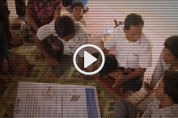

New and featured products
- SG's Special Measures Report 2019 - A/73/744June 2019
- Best Practice Guide Inter-Agency Community-Based Complaints MechanismsJune 2019
- IASC Summary Good Practices on SEA and Sexual Harassment July 2018
- SG's Special Measures Report 2018 - A/72/752 February 2018
- PSEA Implementation Quick Reference HandbookJuly 2017
- Special measures for protection from sexual exploitation and sexual abuse (A/71/818) - 2017February 2017
- Global Standard Operating Procedures for inter-agency community based complaint mechanismsMarch 2017
- SEA flyer - picturesJanuary 2017
- SEA flyer - symbolsJanuary 2017
- No Excuses Card - 2 page - picturesJanuary 2017
- No Excuses Card - 2 page - symbolsJanuary 2017
- No Excuses Card - 4 page - picturesJanuary 2017
- No Excuses Card - 4 page - symbolsJanuary 2017
- Contact List Investigation/SEA Reporting UnitsOctober 2016
- A/71/97 - Combating sexual exploitation & abuse - Report of the Secretary-General June 2016
- Statement of Commitment on Eliminating Sexual Exploitation and Abuse by UN and Non-UN PersonnelDecember 2006
- Co-Chairs’ message to the Global Cluster Coordinators on the Haiyan (Yolanda) ResponseNovember 2013
- FIVE AAP/PSEA KEY MESSAGES FOR COMMUNITIESNovember 2013
- Guidelines to implement the Minimum Operating Standards for PSEAMay 2013
- Special Measures for Protection from Sexual Exploitation and Sexual Abuse (A/67/776) - 2012April 2013
- Compendium of Practices on Community-Based Complaints Mechanisms – Abridged Version December 2012
- Minimum Operating Standards for PSEAJanuary 2012
- Keeping Children Safe calls on the UN to adopt and promote child safeguarding measures in an emergency responseSeptember 2012
- InterAction SEA 101October 2011
- Change starts with us, talk to us !December 2011
- Action Points IASC Principals 13 December, 2011January 2012
- IASC Task Force on PSEA: Workplan 2012January 2012
OTHER PSEA WESITES AND INITIATIVES
To serve with pride
 Video To serve with prideThis 20-minute film “To Serve with Pride: Zero Tolerance for Sexual Exploitation and Abuse” was made to raise awareness among UN and related personnel about the impact of acts of sexual exploitation and abuse on individuals and communities. It provides clear information about the obligations of all people serving the UN as stated in the Secretary-General’s Bulletin on Special Measures for protection from sexual exploitation and abuse (ST/SGB/2003/13).
watch in Arabic, Chinese, English, French, Spanish or Russian
Staff Member
Sexual exploitation and abuse represents a catastrophic failure of protection. It brings harm to those whom we – the UN, NGOs or other international organizations – are mandated to protect and jeopardizes the reputation of our organizations. It also violates universally recognized international legal norms and standards.
As a staff member of the UN, NGOs and other international organizations, you must sustain ethical behaviour in your professional and, even, private life. To your right is a checklist and key documents to inform you of your obligation and relevant information on protection from sexual exploitation and abuse.
Checklist
- Participate in an awareness raising session on PSEA
- Know the rules – see key documents
- Know your PSEA Focal Point – if you don’t, you can ask your human resources office
Key Documents
- Frequently Asked Questions: Sexual Exploitation and Abuse by UN Personnel and Partners
- Secretary-General's Bulletin: Special Measures for Protection from Sexual Exploitation and Sexual Abuse (ST/SGB/2003/13)
- Statement of Commitment on Eliminating Sexual Exploitation and Abuse by UN and Non-UN Personnel
Focal Point
As a Focal Point on Protection from Sexual Exploitation and Abuse, your responsibility is to ensure that PSEA systems are in place and that the activities mentioned in the Terms of Reference for PSEA Focal Points are implemented. While the ToR includes numerous responsibilities, to your right is a Get Started Checklist and key documents to assist you in carrying out your responsibilities as a PSEA Focal Point.
Checklist
- Familiarize yourself with key documents and resources (to your right)
- Speak with your head of office / country representative to ensure joint understanding of your focal point role and agree on a workplan
- Work to establish (if not already in place and together with other PSEA focal points) an in-country network
- Identity yourself as a PSEA Focal Point throughout your office/organization
- Begin to implement the PSEA Focal Point ToR, such as:
- Provide awareness-raising sessions for personnel
- See to designation and training of field Focal Points in your organization
- Support development of internal procedures for staff to report incidents
- Establish, in coordination with the in-country network, community-based complaints mechanisms [this should link to the guide once available]
- Facilitate, in coordination with the in-country network, awareness raising in local communities on SEA, their rights and how to report incidents
Key Documents
- At a Glance: 8 Actions Each Agency Should Take at Country Level on PSEA
- Checklist: Preventing Sexual Exploitation and Abuse in the Kenya Refugee Program (Draft)
- Film Facilitation Guide: To Serve with Pride: Zero Tolerance for Sexual Exploitation and Abuse
- Frequently Asked Questions: Sexual Exploitation and Abuse by UN Personnel and Partners
- Inter-Agency Training for Focal Points on Protection from Sexual Exploitation and Abuse by UN, NGO and IGO Personnel
- Secretary-General's Bulletin: Special Measures for Protection from Sexual Exploitation and Sexual Abuse (ST/SGB/2003/13)
- Statement of Commitment on Eliminating Sexual Exploitation and Abuse by UN and Non-UN Personnel
- Terms of Reference for In-Country Focal Points on Protection from Sexual Exploitation and Abuse by UN/NGO/IGO Personnel
- Terms of Reference for In-Country Network on Protection from Sexual Exploitation and Abuse by UN/NGO/IGO Personnel
Senior Manager
As a senior manager or coordinator you have a particular responsibility to support and develop systems that maintain an environment free from sexual exploitation and abuse. This page provides you with Get Started Checklists, key documents and best practise interviews, all on the responsibilities of Resident and Humanitarian Coordinators, Heads of Office and Resident Representatives.
For more information, feel free to browse through the tools repository and other pages on this site.
Best Practice Interviews with RC/HCs
Checklist
Get started checklist for Resident Coordinator/Humanitarian Coordinator:
- Familiarise yourself with the responsibilities of the RC/HC, senior managers, focal points and the in-country network (see Key Documents and tool repository)
- Host a “learning event” for senior managers of the country team and mission (if applicable) and yourself on PSEA responsibilities (contact us for assistance)
- Liaise with the SRSG/RSG to agree on respective responsibilities and how to bring the UNCT and mission together to implement the Secretary-Generals Bulletin (if applicable)
- Ensure all agencies/organizations have appointed senior-level PSEA focal points and alternates
- Ensure that an in-country network on PSEA (comprised of the focal points) is in place and is developing a country-level action plan
- Review the action plan and share with the country team for approval, and ensure financial and technical resources are in place to implement the plan
- Together with the country team ,continually monitor the implementation of the action plan
Get started checklist for Heads of Office and Resident Representative:
- Familiarise yourself with the responsibilities of senior managers, focal points and the in-country network (see Key Documents). If possible, participate in a “learning event” for senior managers
- Appoint and provide regular supervision to a senior-level PSEA focal point and alternate for your office and include the focal point responsibilities in their ToRs
- Agree on a workplan with the focal point, including participation in a PSEA network, and monitor implementation
- Support the focal point’s efforts and promote action to protect from SEA in your agency, the UNCT and the HCT (as appropriate)
- Implement the HoO/RR responsibilities
Key Documents
- Actions To Be Taken by Humanitarian Coordinators and Actions to Be Taken by Heads of Office: Implementation of the Secretary-General's Bulletin on Special Measures for Protection from Sexual Exploitation and Abuse (ST/SGB/2003/13) (attachment to Email from UN ERC to Humanitarian Coordinators and Heads of Office)
- At a Glance: 8 Actions Each Agency Should Take at Country Level on PSEA
- One-Day Learning Event for Senior Managers of the International UN, NGO and IGO Community on Protection from Sexual Exploitation and Abuse by UN and NGO Personnel and Partners
- Secretary-General's Bulletin: Special Measures for Protection from Sexual Exploitation and Sexual Abuse (ST/SGB/2003/13)
- Statement of Commitment on Eliminating Sexual Exploitation and Abuse by UN and Non-UN Personnel